Common name in Tamil : Tekil
Common name in Telugu : Nalla tiga
Common name in Singhalese : Kala-wel
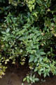
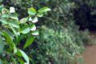
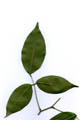
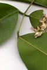
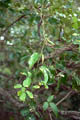
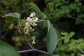
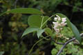
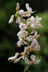
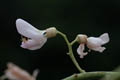
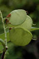
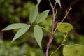
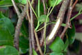
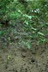
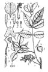
Diagnostic characters
Botany & morphology
Regeneration
Ecology
Distribution
Uses
Scrambling woody climber or erect shrub, spreading by root suckers, branches wiry, strong; bark grey lenticellate. Leaves imparipinnate. Flowers white to pale pink. Fruit 1- seeded pods.
Leaves compound, alternate, imparipinnate, 6 – 15 cm long; leaflets 3 - 5, opposite, ovate-oblong, apex shortly acuminate, base rounded, margin entire, 5 - 10 x 2 - 3.5 cm; subcoriaceous.
Inflorescences axillary raceme.
Flowers small, white to pale pink, zygomorphic, bisexual; calyx 5 cup shaped; petals 5; stamens 10, monadelphous, anthers versatile and uniform; ovary free, style long, stigma peltate.
Fruit pods, obliquely ovate or orbicular, flat, narrowly winged along the suture, 1-seeded.
Bark grey with prominent lenticels.
Spreading by root suckers. Epigeal or modified epigeal germination.
Occur in coastal communities such as beaches, strand vegetation, and coastal swamps and frequent in back mangrove.
East Africa, Madagascar, tropical and subtropical Asia to tropical Australia.
The stems and long wiry branches yield strong fiber and are used as ropes.
Top of the page